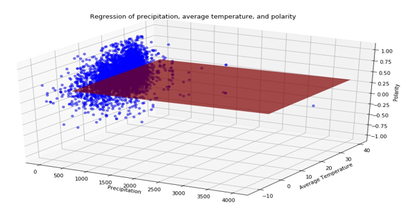

The Relationship between Weather and Yelp Reviews
1. Introduction
Does the weather affect people's moods so significantly that they will rate restaurants lower or higher? In this project,
we use Yelp and NOAA weather data to investigate the relationship between the weather and restaurant reviews.
In the previous report, we explained our data collection process - pulling from both Yelp and NOAA.gov.
That process resulted in ~17,000 Yelp reviews from ~5,800 restaurants across the US, and daily weather measures
(precipitation, snow and temperature) from 7,711 weather stations across the US.
In this project, we begin by merging the datasets (by latitude and longitude) to explore the relationship between the reviews and the weather on that the day of the review. From there, we compute sentiment analysis on the text reviews and perform exploratory and predictive analysis on the data. We do not find a strong correlation between Yelp reviews and weather. Using machine learning classification methods, we cannot predict the rating based on weather and location better than random chance. Although we cannot support our principle data science question, we find some interesting results.
The project is divided into the following sections. Section 2 explains the Preprocessing, followed by Binning in Section 3, Sentiment Analysis in Section 4, and Basic Statistical Analysis in Section 5. From there, we will examine Histograms and Outliers in Section 6 and review our Data Cleaning in Section 7. Next, we compute Correlations and examine Scatterplots of the data in Section 8. In Section 9 we discuss Clustering. In Section 10, we compute Association Rules. Finally, in Section 11, we compute Hypothesis Testing.
In this project, we begin by merging the datasets (by latitude and longitude) to explore the relationship between the reviews and the weather on that the day of the review. From there, we compute sentiment analysis on the text reviews and perform exploratory and predictive analysis on the data. We do not find a strong correlation between Yelp reviews and weather. Using machine learning classification methods, we cannot predict the rating based on weather and location better than random chance. Although we cannot support our principle data science question, we find some interesting results.
The project is divided into the following sections. Section 2 explains the Preprocessing, followed by Binning in Section 3, Sentiment Analysis in Section 4, and Basic Statistical Analysis in Section 5. From there, we will examine Histograms and Outliers in Section 6 and review our Data Cleaning in Section 7. Next, we compute Correlations and examine Scatterplots of the data in Section 8. In Section 9 we discuss Clustering. In Section 10, we compute Association Rules. Finally, in Section 11, we compute Hypothesis Testing.
2. Preprocessing: Merging weather and Yelp data
In order to move forward with our analysis, we performed additional preprocessing.
In particular, we merged the three cleaned datasets from the first project, into one dataset, merged_data.csv.
The input data sets consist of three parts. The first is the daily weather data, which contains observed values of each weather station (2017_Weather_CleanData.csv). The second is restaurant review data set, which contains the restaurant ids, review ratings, review texts and time of reviews (Restaurant_Detail_CleanData.csv). The third is the detailed information of each restaurant, such as latitude, longitude, average rating and restaurant id (Restaurant_Reviews_CleanData.csv).
We first use the restaurant_id column as the key to merge the restaurant reviews and restaurant details. Thus, we get a data set that contains the latitude, longitude and time for each review. Then we use the package geopy to calculate the distances between restaurants and stations. To decrease the complexity, we just calculate the distances between in a range of +/- 1 latitude and longitude, which is approximately 69 miles for latitude or longitude, for each restaurant. Then we select the closest station's data that have observed values on the same day as each review. We dropped 19 reviews because we could not find a close enough weather station with data for that day. After that, we output a file named merged_data.csv. This process takes about 5 minutes, and is named Preprocessing.py.
The input data sets consist of three parts. The first is the daily weather data, which contains observed values of each weather station (2017_Weather_CleanData.csv). The second is restaurant review data set, which contains the restaurant ids, review ratings, review texts and time of reviews (Restaurant_Detail_CleanData.csv). The third is the detailed information of each restaurant, such as latitude, longitude, average rating and restaurant id (Restaurant_Reviews_CleanData.csv).
We first use the restaurant_id column as the key to merge the restaurant reviews and restaurant details. Thus, we get a data set that contains the latitude, longitude and time for each review. Then we use the package geopy to calculate the distances between restaurants and stations. To decrease the complexity, we just calculate the distances between in a range of +/- 1 latitude and longitude, which is approximately 69 miles for latitude or longitude, for each restaurant. Then we select the closest station's data that have observed values on the same day as each review. We dropped 19 reviews because we could not find a close enough weather station with data for that day. After that, we output a file named merged_data.csv. This process takes about 5 minutes, and is named Preprocessing.py.
3. Binning
We binned three attributes to assist in our analysis. Each bin region, season, and TCAT is described below.
3.1 Region Bins
We grouped the regions of the US into 9 bins, trying to keep states with similar climates together.
This bin allows for region-level analysis which is important when working with a widespread dataset.
Review counts by region are below, as well as the definition in Table 3.1.
We dropped 8 reviews that did not fall into the US, which is discussed further in Section 5.
3.2 Season Bins
Next, we binned the seasons, based on the 2017 calendar, up until the most recent review in the dataset,
which is from 10/4/17. Again, we passed explicit bins to the data. The majority are from Summer. Results are below in Table 3.2.
3.3 Temperature Bins
Finally, we created TCAT by binning the numerical variable TAVG into 5 bins by passing
the range of temperatures explicitly. As shown in Table 3.3, the majority of reviews fall into the
Mild category at 16-30°C, as expected since the majority of the reviews are from Summer.
This bin makes working with the temperature data easier, and in particular, makes excluding extreme temperatures easier.
4. Sentiment Analysis
To further analyze the Yelp data, we performed sentiment analysis on the text of the reviews.
We used the Python package NLTK and the library TextBlob, which perform the necessary
preparation to determine sentiment, including lemmatization and tokenization. TextBlob classified
each review as: Positive, Neutral, or Negative. It also created the attribute sentiment_polarity,
which is a continuous variable from 1 to -1 which will be used in later analysis.
The sentiment analysis classifies 83% of all reviews as positive, as show below in Table 4.1.

In Table 4.2 below, the sentiment analysis is compared with the given Yelp rating. The sentiment analysis
classifies 88% of 5-star reviews as Positive. On the other hand, the sentiment analysis classifies 43% of
1-star reviews as Negative. The alignment is not perfect, suggesting some performance issues in the sentiment analysis.
The correlation is explored further in Section 8.
We generated a word cloud based on the frequency of words in the reviews using the wordcloud package in NLTK.
The largest words (and thus most common) tend to be positive, for example, "good", "great", and "love".
This is expected as the majority of reviews were classified as positive (83%), and given 5-star reviews (55%).
Figure 4.1: Yelp Reviews Wordcloud
5. Basic Statistical Analysis
First, we analyze the weather attributes for the day and location of the Yelp reviews.
The average temperature is 21.3°C (70.3°F). The maximum temperature is high, at 40.3°C/104.5°F,
however, in Section 6 this is determined not to be an outlier. The average precipitation is 2.78 mm.
The maximum is high, at 206.2 mm (8.1 inches). This will also be discussed in Section 6 and determined
not to be an outlier. For most days, the precipitation is zero. For SNOW, the average is 0.1, but
again for most days it is missing or zero.
Next, we analyze the distance and location attributes in Table 5.2. Dist is the distance in miles
from the restaurant location to its closest weather station. The maximum distance allowed was 69 miles to assure
that the station and restaurant are close enough to have similar weather. The average station is 6.6 miles away.
The furthest is 64.7 miles. The state attribute shows that we have Yelp review data for restaurants in 47
different states, with the most from California. The states that are not included in this analysis are: Montana,
South Dakota, and North Dakota. To obtain the Yelp data, we passed the top 300 most-populous counties to the
Yelp API, which did not include any counties from those three states.
Next, we consider summary statistics for the restaurant and review attributes in Table 5.3. The median Yelp review
rating, review_rating, is 5-stars. At the restaurant-level, the median rating, rest_rating, is 4.5-stars.
The review ratings are int64, since the only possible values are 1-5 stars, while the restaurant ratings are
float64 since they are averaged over many reviews. The average restaurant is also highly-reviewed, with
236 reviews, as shown for review_count. The price attribute is a categorical variable, with the most
common restaurant being '$$' in price.
Lastly, we analyze the attributes from the sentiment analysis. The most common sentiment is positive, at 1,
with an average polarity of 0.3. The standard deviation of polarity is 0.3.
6. Outlier Detection and Histograms
The Yelp data attributes do not have outliers, by their definitions. For example, the rating range is set
at 0 to 5-stars, so it impossible to have outliers. However, we checked the weather data for outliers.
For temperature, TAVG, the range is from -20.6 °C to 40.3 °C. We checked the extreme values by hand to determine if they were outliers. The maximum temperature is 40.3°C/104.5°F. We confirmed that it came from an Arizona weather station in July, which is not unusual for that location and time of year. For the minimum temperature, -20.6°C/-5°F, we confirmed that it came from a Minnesota weather station in January, also not unusual. The below histogram in Figure 6.1 illustrates the spread and left-skew of TAVG.
Figure 6.1: Histogram of TAVG
We also checked precipitation values for outliers. The range of PRCP is from 0 to 206.2mm (8.1 inches). The maximum value was checked by hand. It was confirmed that it came from a Florida weather station in August, not unusual for that location and time of year. It did not rain on the majority of days, explaining the large spike at zero in the below histogram, Figure 6.2.
Figure 6.2: Histogram of PRCP
For the snow data, the majority is missing or zero, which limits the analysis that can be done with it. However, there are 34 reviews for which there is reported snowfall. The range of values is 0 to 178 mm (7.0 inches). The maximum snowfall came from a New York weather station in January. The histogram, Figure 6.3, is below, which only includes days with snowfall greater than zero.
Figure 6.3: Histogram of SNOW
To sum up, although extreme values exist in the weather data, we feel confident in their accuracy and decided not to drop any.
For temperature, TAVG, the range is from -20.6 °C to 40.3 °C. We checked the extreme values by hand to determine if they were outliers. The maximum temperature is 40.3°C/104.5°F. We confirmed that it came from an Arizona weather station in July, which is not unusual for that location and time of year. For the minimum temperature, -20.6°C/-5°F, we confirmed that it came from a Minnesota weather station in January, also not unusual. The below histogram in Figure 6.1 illustrates the spread and left-skew of TAVG.
We also checked precipitation values for outliers. The range of PRCP is from 0 to 206.2mm (8.1 inches). The maximum value was checked by hand. It was confirmed that it came from a Florida weather station in August, not unusual for that location and time of year. It did not rain on the majority of days, explaining the large spike at zero in the below histogram, Figure 6.2.
For the snow data, the majority is missing or zero, which limits the analysis that can be done with it. However, there are 34 reviews for which there is reported snowfall. The range of values is 0 to 178 mm (7.0 inches). The maximum snowfall came from a New York weather station in January. The histogram, Figure 6.3, is below, which only includes days with snowfall greater than zero.
To sum up, although extreme values exist in the weather data, we feel confident in their accuracy and decided not to drop any.
7. Missing Values and Data Cleaning
In the previous project, we discussed missing values. In the Yelp data, only one restaurant had
missing latitude and longitude - we researched the restaurant "Milya cafe" to determine its coordinates.
We wrote code to repair that row with the appropriate data. Other missing values were not a problem,
as those columns were not necessary for analysis. For the weather data, we dropped rows with missing
values for temperature and precipitation since those values are necessary to complete our analysis.
To prepare for this project's analysis, we performed some extra data cleaning. First, we dropped 19 reviews for which we could not match with a close weather station, as explained in Section 2. Second, when binning by region, we dropped 8 reviews that were not from a restaurant in a US state. In the first project, we limited the data by US county, however, a few Canadian and Mexican restaurants made it into our data. To sum up, after the additional cleaning we dropped a total of 27 reviews, or 0.17% of our data.
To prepare for this project's analysis, we performed some extra data cleaning. First, we dropped 19 reviews for which we could not match with a close weather station, as explained in Section 2. Second, when binning by region, we dropped 8 reviews that were not from a restaurant in a US state. In the first project, we limited the data by US county, however, a few Canadian and Mexican restaurants made it into our data. To sum up, after the additional cleaning we dropped a total of 27 reviews, or 0.17% of our data.
8. Scatterplots and Correlations
In this section, we explore the correlation among three attributes: review_rating, TAVG,
sentiment_polarity. Review_rating is the given Yelp rating and sentiment_polarity
its computed sentiment. TAVG is the local temperature on the day the review was written.
The correlation matrix is below in Table 8.1. The most correlated attributes, with a coefficient of 0.314,
are rating and sentiment, as expected. Neither the rating nor the sentiment are strongly correlated with TAVG.

Figure 8.1 shows the scatterplot. The correlation, although weak, is visible. As the Yelp rating moves to 5-stars, the polarity of the sentiment also increases.
Figure 8.1: Scatterplot of sentiment_polarity and review_rating
Next, we plot TAVG and sentiment_polarity in Figure 8.2. The correlation is weak, across all regions.
Figure 8.2: Scatterplot of sentiment_polarity and TAVG
Lastly, we plot TAVG and review_rating in Figure 8.3. Again, the correlation is weak, suggesting the temperature does not have much of an effect on Yelp ratings.
Figure 8.3: Scatterplot of review_rating and TAVG

Figure 8.1 shows the scatterplot. The correlation, although weak, is visible. As the Yelp rating moves to 5-stars, the polarity of the sentiment also increases.
Next, we plot TAVG and sentiment_polarity in Figure 8.2. The correlation is weak, across all regions.
Lastly, we plot TAVG and review_rating in Figure 8.3. Again, the correlation is weak, suggesting the temperature does not have much of an effect on Yelp ratings.
9. Cluster Analysis
We used three clustering techniques to analyze our data. Each method (KMeans, DBScan and Hierarchical)
is described below. Using KMeans and DBScan we analyzed the relationship among four key attributes
(rest_lat, rest_long, TAVG and sentiment_polarity). We used Hierarchical Clustering
to group the reviews by US region.
9.1 KMeans Clustering
In clustering, the goal is to detect high similarity and low similarity within a group.
We created a group with the restaurant's latitude (rest_lat) and longitude (rest_long),
average temperature (TAVG) of the day on which the review was posted and the sentiment polarity
(sentiment_polarity) of the review. Our goal was to determine if these variables are interrelated
and form a pattern. We used the KMeans clustering method with k=3. This results in a
Silhouette score of 0.316. As shown in the PCA projection in Figure 9.1, there are some outliers.
The clusters are not well separated, indicating the KMeans clustering analysis is not appropriate for this data.
Figure 9.1: KMeans Clustering
9.2 DBSCAN Clustering
We used the same group of attributes for DBSCAN - rest_lat, rest_long,
TAVG, and sentiment_polarity. Since DBSCAN is a density-based spatial
clustering algorithm, it formed better clusters than KMeans. The PCA projection, in
Figure 9.2, indicates that all the data points in the group were similar and thus form
one big cluster. The outliers were properly detected (in purple and pale yellow). The cluster
and the outliers are well-separated justifying the high Silhouette score of 0.626.
Figure 9.2: DBSCAN Clustering
9.3 Hierarchical Clustering
Different regions of the US may use different vocabulary when writing Yelp reviews. This could be related
to regional cuisine, for example, grits in the South or lobster in New England. It could also be related
to the language that reviewers use, for example, describing something as "wicked" in New England. We
used hierarchical clustering on the text of the reviews by region to determine their relationship.
Using cosine similarity, the clustering resulted in three clusters from the nine regions. The Silhouette score is 0.58.
The dendrogram, in Figure 9.3, shows that the most similar reviews are from the Mid-Atlantic and the Southeast, which makes sense since the states from those regions are adjacent. The Midwest, Mountain and New England regions stand apart as being the most different.
Figure 9.3: Dendrogram
The dendrogram, in Figure 9.3, shows that the most similar reviews are from the Mid-Atlantic and the Southeast, which makes sense since the states from those regions are adjacent. The Midwest, Mountain and New England regions stand apart as being the most different.
10. Association Rules
Using association rules, we examined the words in 5-star reviews, specifically food-related words.
First, we subsetted the data on 5-star reviews. Next, we imported a dataset of common food words
(food words dataset sourced from wordnet within NLTK). Using the Apriori Principle, we first
found the most frequent food words, as shown in Table 10.1. Chicken is the most frequently used
word, which is not surprising given its prevalence in American cuisine.
Next, we found the support level of the itemsets based on the most frequent words.
The top 20, sorted by support level, are below in Table 10.2.
Finally, we computed seven association rules based on three different support levels
(0.25%, 0.20%, 0.10%). Results are in Table 10.3. The support for the first rule,
{chicken}->{pork}, is 0.276%, meaning 0.276% of 5-star reviews mention both chicken and pork.
The confidence is 6.1%, meaning 6.1% of all reviews that mention chicken also mention pork.
11. Predictive Analysis and Hypothesis Testing
We tested three hypotheses using seven different techniques to analyze our data. Each method
(KMeans, Hierarchical, and DBScan) is described below.
11.1 Hypothesis 1: Does the average Yelp rating differ significantly by region? (ANOVA)
To test this hypothesis, we used an ANOVA 1-way test. Looking at the ratings by region, there is a
seemingly small difference between them. Reviews from the Southeast are the highest on average,
while those from New England are the lowest.
After running the test, the resulting p-value is extremely small, at 5.95e-5. Therefore, we reject the null hypothesis and determine that there is a significant difference in the means of the ratings by region. This result supports the decision to group the data by region, since there is a significant difference.
After running the test, the resulting p-value is extremely small, at 5.95e-5. Therefore, we reject the null hypothesis and determine that there is a significant difference in the means of the ratings by region. This result supports the decision to group the data by region, since there is a significant difference.
11.2 Hypothesis 2: Does the degree of rain and average temperature affect the sentiment of Yelp reviews? (Linear Regression)
First, we select the subset of data that contains rainy days' information only. Then we select
data from several different states to conduct multivariate linear regression. The X attributes
are PRCP and TAVG. The Y attribute is sentiment_polarity. We split
the data into train and test datasets. Then we build a multivariate linear regression
model based on the train dataset. Next, we use the test dataset to examine the performance of the model.
The performance of this model is poor. The R2 is -0.0061766461038, which shows there is no
relationship between X (weather attributes) and Y (sentiment_polarity). The 3D plot below in Figure 11.1 also illustrates the same point.
Figure 11.1: Multivariate Linear Regression

Then we select five states, which are CA, VA, NE, NY and AL, to build state-level multivariate linear regression models. The performance of these models is also poor. For example, the R2 for VA is only 0.0585879846678. Therefore, even when analyzing a single state, we cannot determine a relationship between sentiment and weather.
Then we select five states, which are CA, VA, NE, NY and AL, to build state-level multivariate linear regression models. The performance of these models is also poor. For example, the R2 for VA is only 0.0585879846678. Therefore, even when analyzing a single state, we cannot determine a relationship between sentiment and weather.
11.3 Hypothesis 3: Can the rating be predicted from weather and location attributes: TAVG, PRCP, region_idx? (ML Algorithms)
To test whether we could predict the rating based on location and weather alone, we used five different
machine learning techniques: k-Nearest Neighbor (kNN), Decision Tree (CART), Naive Bayes (NB), Support Vector Machines (SVM), and Random Forest.
First, we grouped the rating into two classes: High (4-5 stars) and Low (0-3 stars). Next, we applied each machine learning algorithm. The results for cross-validation are below in Table 11.4. Naive Bayes and SVC performed the best in cross-validation, with ~80% accuracy.
Next, we compare the confusion matrix results for each method.
kNN
The kNN algorithm works by setting a value for k, we the default k=5, and then classifying data through a Nearest Neighbor algorithm. The algorithm finds the distance of the point to the nearest five clusters, and then classifies based on the classification of the closest cluster. The confusion matrix results are below in Table 11.5. The kNN correctly classified (the true positives) 2338 points from the test data.
CART
CART is a decision tree classifying method. It works by splitting the features until it reaches a pure node, and then uses the resulting tree to classify. The confusion matrix results are below in Table 11.6. This method performed slightly worse than kNN for identifying true positives, but better at identifying true negatives (low ratings).
Naive Bayes
Naive Bayes is a probability-based classifying method. It assumes independence among the features, which does not fit with our data since weather features are interdependent. However, we used the method and results are below in Table 11.7. The NB classified all points as having a High rating.

SVC
SVC works by maximizing the margin of a support vector through the data. This method can handle high dimensional data, in our case we are using just 4-dimensions. SVC also classified all points as positive, or as High rating as seen in Table 11.8.
RF
Random Forest (RF) is a method that uses an ensemble of decision trees. This method, similar to CART, performed relatively well. It correctly classified 2316 points as true positive, and 57 points as true negative.
Finally, we generated the ROC curve for each method. The dotted line indicates the results if the classification was left to random chance. Our machine learning algorithms just barely outperform the dotted line. This indicates that we cannot predict the rating by weather and location alone better than random chance.
Figure 11.2: ROC curves for all ML methods
First, we grouped the rating into two classes: High (4-5 stars) and Low (0-3 stars). Next, we applied each machine learning algorithm. The results for cross-validation are below in Table 11.4. Naive Bayes and SVC performed the best in cross-validation, with ~80% accuracy.
Next, we compare the confusion matrix results for each method.
kNN
The kNN algorithm works by setting a value for k, we the default k=5, and then classifying data through a Nearest Neighbor algorithm. The algorithm finds the distance of the point to the nearest five clusters, and then classifies based on the classification of the closest cluster. The confusion matrix results are below in Table 11.5. The kNN correctly classified (the true positives) 2338 points from the test data.
CART
CART is a decision tree classifying method. It works by splitting the features until it reaches a pure node, and then uses the resulting tree to classify. The confusion matrix results are below in Table 11.6. This method performed slightly worse than kNN for identifying true positives, but better at identifying true negatives (low ratings).
Naive Bayes
Naive Bayes is a probability-based classifying method. It assumes independence among the features, which does not fit with our data since weather features are interdependent. However, we used the method and results are below in Table 11.7. The NB classified all points as having a High rating.
SVC
SVC works by maximizing the margin of a support vector through the data. This method can handle high dimensional data, in our case we are using just 4-dimensions. SVC also classified all points as positive, or as High rating as seen in Table 11.8.
RF
Random Forest (RF) is a method that uses an ensemble of decision trees. This method, similar to CART, performed relatively well. It correctly classified 2316 points as true positive, and 57 points as true negative.
Finally, we generated the ROC curve for each method. The dotted line indicates the results if the classification was left to random chance. Our machine learning algorithms just barely outperform the dotted line. This indicates that we cannot predict the rating by weather and location alone better than random chance.
12. Conclusion
To conclude, we did not find any relationship between the weather and Yelp reviews or sentiment through this analysis.
However, we did uncover regional differences in Yelp reviews, as shown in the dendrogram in Section 9 and the hypothesis
test in Section 11. We also analyzed the language used in the Yelp reviews, resulting in the sentiment analysis in
Section 4 and the association rules in Section 10.